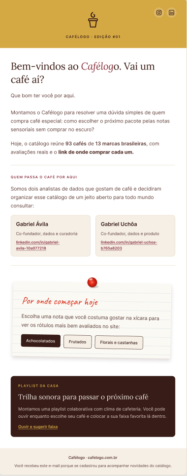

Vocês já têm os dados.
Agora falta aparecer no Google e segurar quem chega.
Hoje o Cafélogo organiza 93 cafés de 13 marcas brasileiras por notas sensoriais. O próximo passo é usar essa base para ganhar espaço em buscas orgânicas, dar um rosto mais quente ao site e transformar visitantes ocasionais em leitores recorrentes.
Ganhar nas buscas específicas em vez de brigar por termos genéricos.
Disputar "café especial" no Google é brigar com grandes marketplaces. Na cauda longa, a concorrência cai e a intenção de compra sobe. Quem gosta de café pesquisa exatamente a nota ou o método que quer provar:
Cada nota sensorial e cada marca pode virar uma página própria indexável (como /notas/frutados). Adicionando dados estruturados de produto e avaliação, aumentamos a chance de exibir estrelas direto nos resultados do Google, o que costuma elevar a taxa de clique.
Trazer o clima de cafeteria sem pesar o celular.
Quem entra no site precisa sentir o clima de café logo nos primeiros segundos. Fundo claro de papel, o novo símbolo do copo com vapor sutil na entrada e a busca por notas aberta na primeira tela, mantendo o carregamento rápido no mobile.
#D4A843
#381C18
#8A3343
#F5EFE6
Quem chega pelo Google e fecha a aba não volta sozinho.
Uma newsletter simples de boas-vindas apresentando vocês dois e recomendando cafés por nota sensorial transforma tráfego pontual em base própria.

Uma newsletter com 5 mil leitores qualificados já abre espaço comercial concreto: torrefações pagam por destaque editorial na edição, cupons exclusivos ou selo de apoiador dentro do catálogo.
Foco no núcleo que gera resultado primeiro.
Para manter o projeto enxuto e mensurável, a proposta separa o núcleo essencial de entregas complementares que podem entrar depois.
-
Núcleo · 01
SEO de cauda longa
URLs indexáveis por nota sensorial e marca, meta tags dinâmicas e dados estruturados.
-
Núcleo · 02
Identidade e front-end
Aplicação do novo símbolo, paleta editorial e ajustes na entrada do site com foco em celular.
-
Núcleo · 03
Newsletter de boas-vindas
Template pronto para disparo apresentando os fundadores e direcionando cliques de volta ao catálogo.
-
Núcleo · 04
Base para apoiadores
Estrutura inicial para capturar e-mails no site e apresentar a audiência a torrefações parceiras.
Playlist colaborativa de cafeteria (para aumentar tempo na página) e Push notifications (avisos curtos quando entram novos rótulos). Ficam fora do núcleo inicial para não inflar o escopo.
Antes de fechar qualquer número, quero ouvir o que faz mais sentido para o momento do Cafélogo. Se fizer sentido para vocês, marcamos uma conversa rápida para escolher por onde começar.
vamos tomar um café?